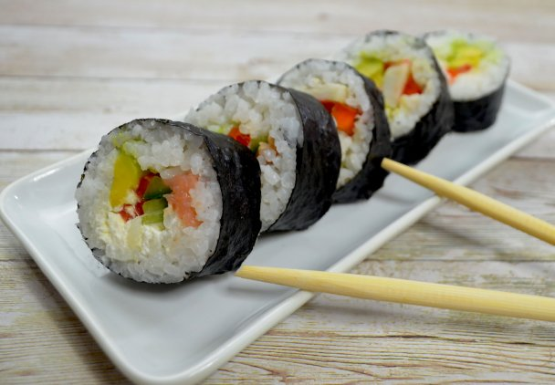

Sushi
Decription
Lasagna (plural “lasagne”) is a flat and expanded pasta sheet, traditionally made in Italy with Parmigiano-Reggiano (Parmesan cheese), Béchamel sauce (white sauce), and ragù (a meat-based sauce). Despite the traditional form still being popular, lasagna has taken on many different recipes over the years.
Ingredients
- Fish
- Rice
- Seaweed
Steps
- Cook rice
- Slice fish
- Roll rice and fish with seaweed